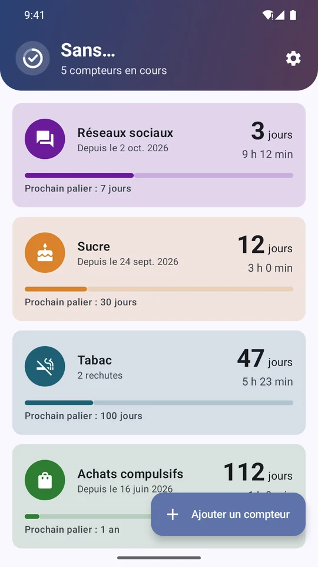
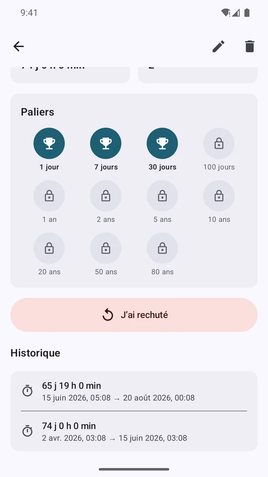
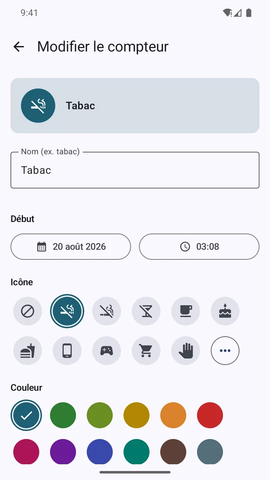
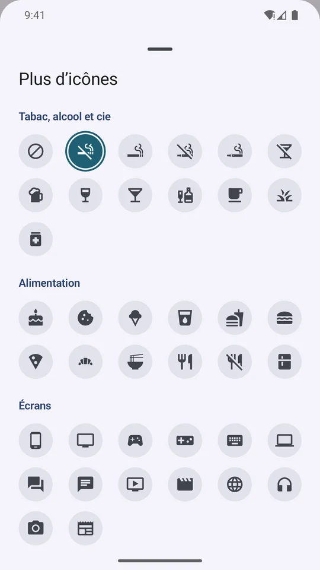
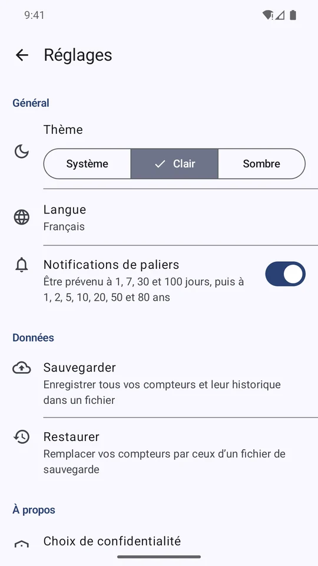
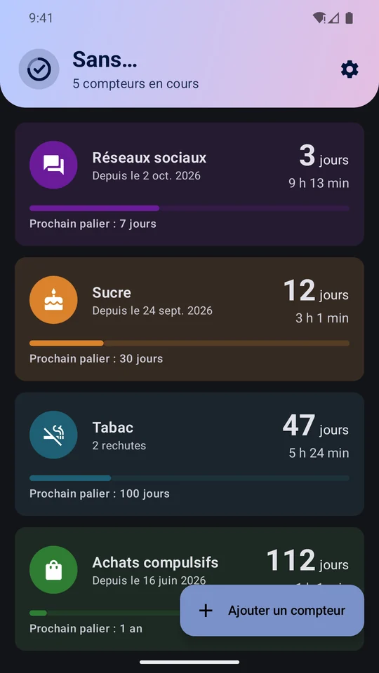

Sans…
Sans…Tout pour tenir bon
Simple au quotidien, motivant sur la durée.
Plusieurs compteurs
Un nom, une icône parmi 77 et une couleur pour chacun, avec la date et l’heure exactes du début.
Le temps en direct
Jours, heures, minutes et secondes qui défilent. Au-delà d’un an : années et jours.
Rechute sans jugement
Un bouton remet le compteur à zéro et garde la série précédente dans l’historique.
Paliers et badges
1, 7, 30 et 100 jours, puis 1, 2, 5, 10, 20, 50 et 80 ans, avec une notification pour fêter chaque étape.
Widget
Gardez le compteur de votre choix sur l’écran d’accueil.
À votre façon
Thème clair ou sombre, français ou anglais, sauvegarde et restauration dans un fichier.
Aperçu
Faites défiler pour voir les écrans.






Vos données restent chez vous
Ni compte, ni serveur : vos compteurs et leur historique sont enregistrés uniquement sur votre téléphone.
L’appli est gratuite grâce à un seul bandeau publicitaire (Google AdMob). Aucune publicité en plein écran ni dans le widget.
Sans… n’est pas un dispositif médical et ne remplace pas l’avis d’un professionnel de santé.